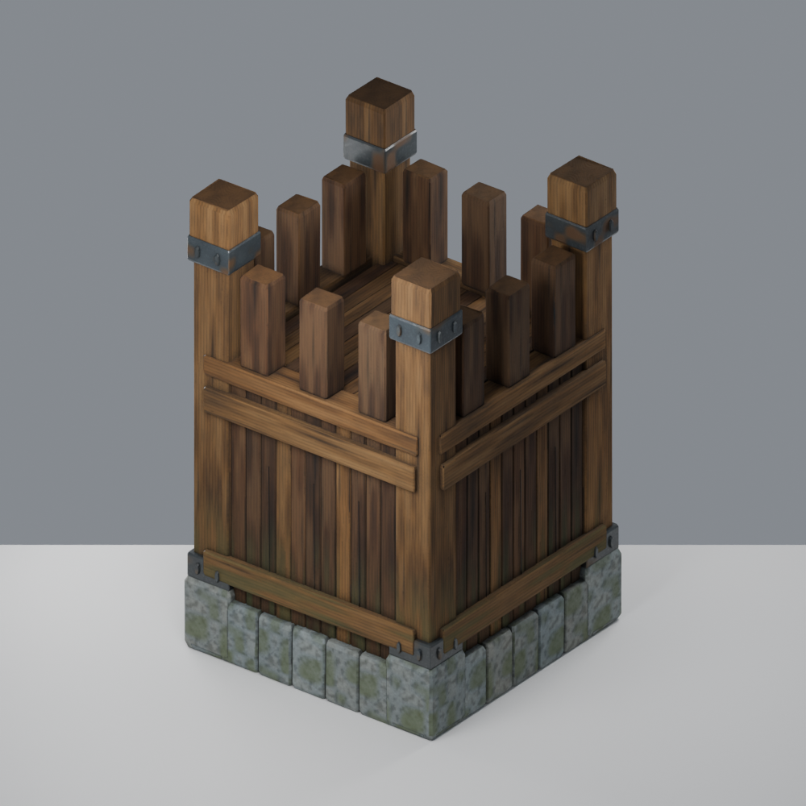
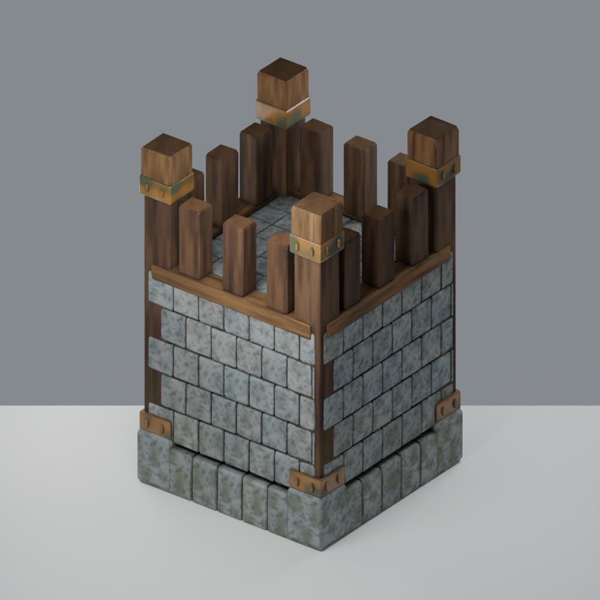
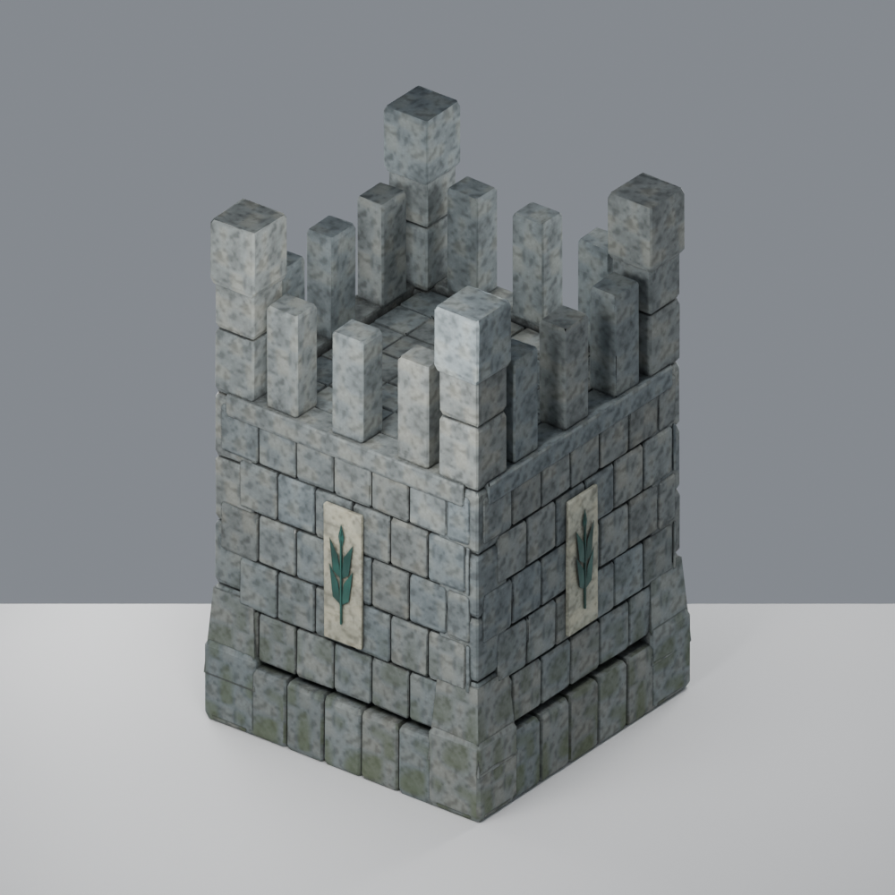
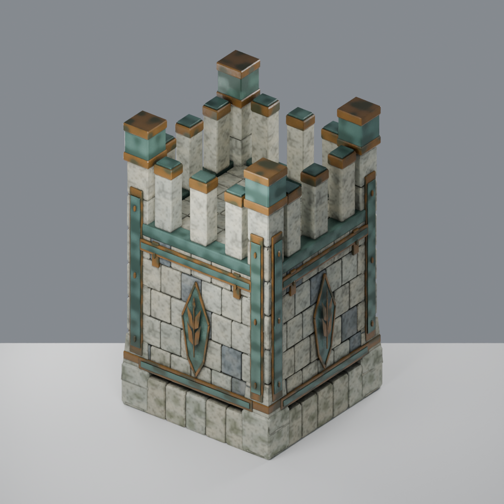
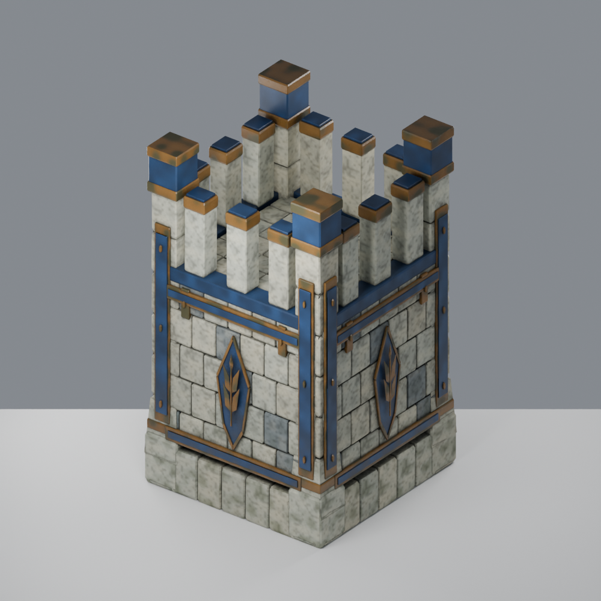
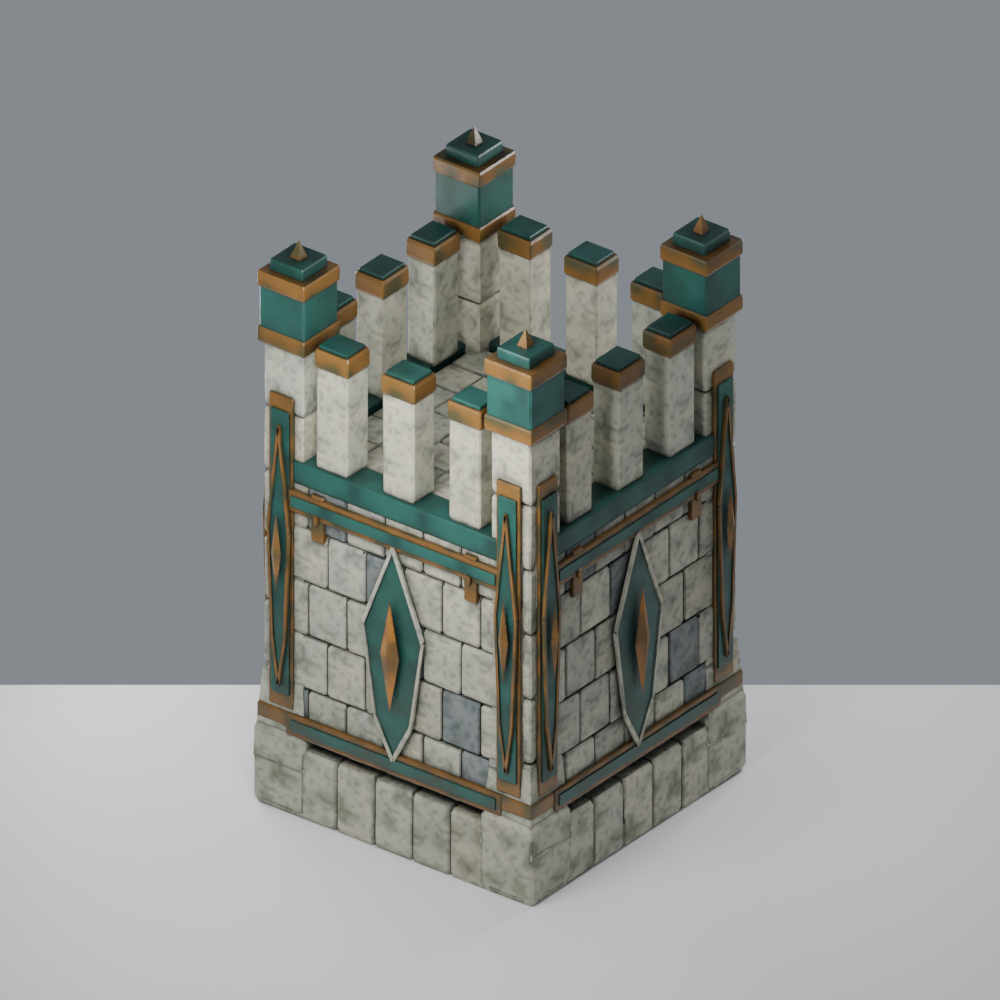
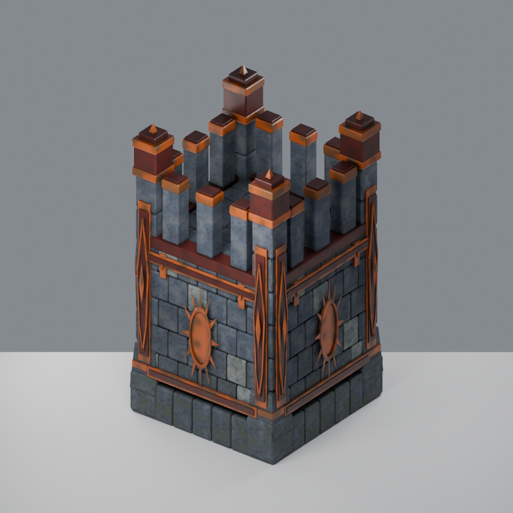
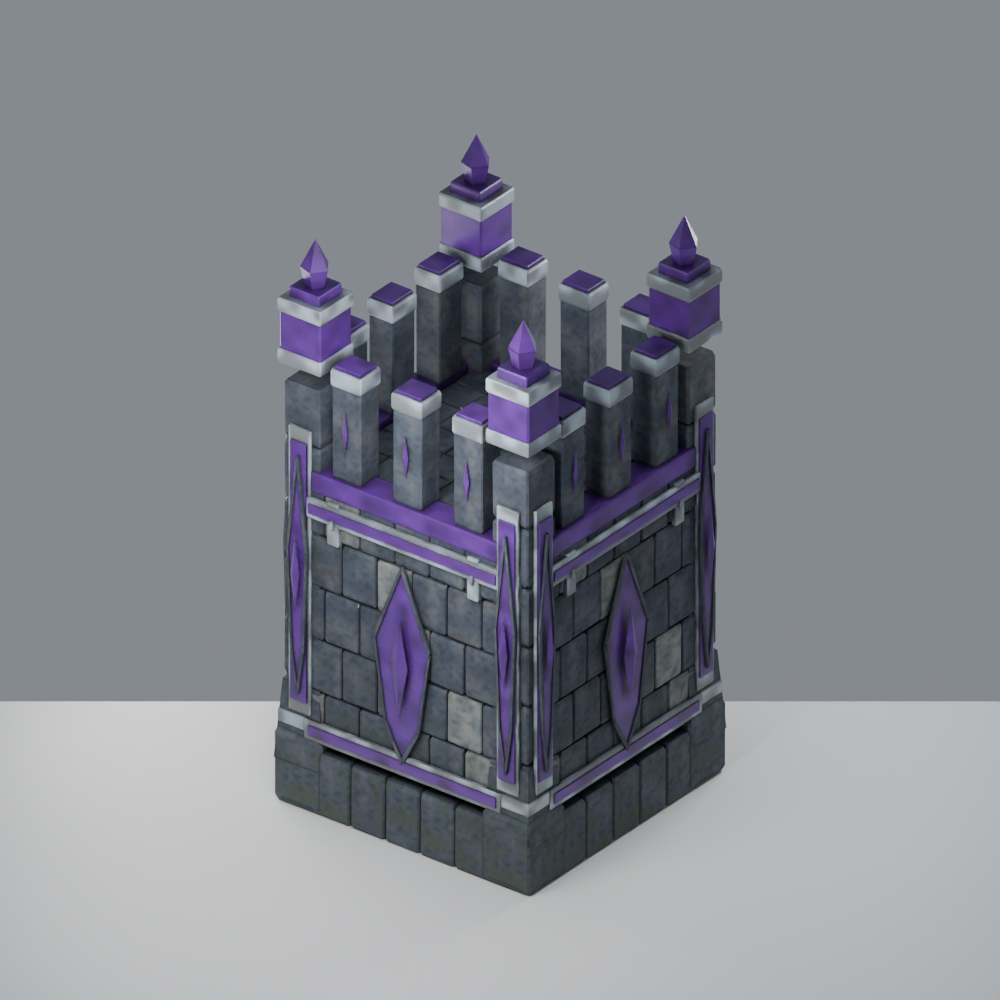
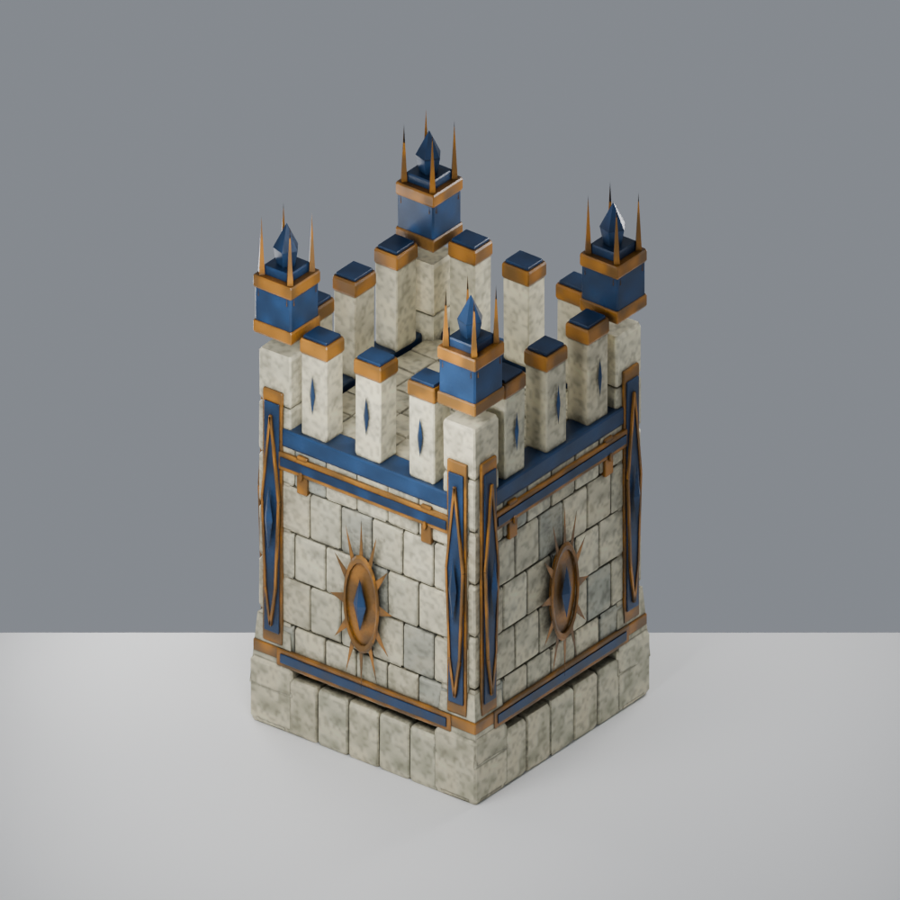
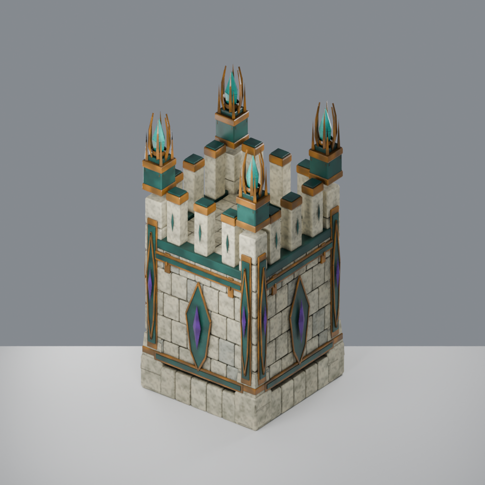

01 · 原木城墙
等级 1–3 · Ⅰ / Ⅱ / Ⅲ
高度为初版 2.5 倍，宽度仍为四格 × 四格；旧木、风化砌石逐渐过渡至精修金属和晶石。每三个玩法等级共用一种模型。以下为实际网格的 Blender 渲染。

等级 1–3 · Ⅰ / Ⅱ / Ⅲ

等级 4–6 · Ⅰ / Ⅱ / Ⅲ

等级 7–9 · Ⅰ / Ⅱ / Ⅲ

等级 10–12 · Ⅰ / Ⅱ / Ⅲ

等级 13–15 · Ⅰ / Ⅱ / Ⅲ

等级 16–18 · Ⅰ / Ⅱ / Ⅲ

等级 19–21 · Ⅰ / Ⅱ / Ⅲ

等级 22–24 · Ⅰ / Ⅱ / Ⅲ

等级 25–27 · Ⅰ / Ⅱ / Ⅲ

等级 28–30 · Ⅰ / Ⅱ / Ⅲ